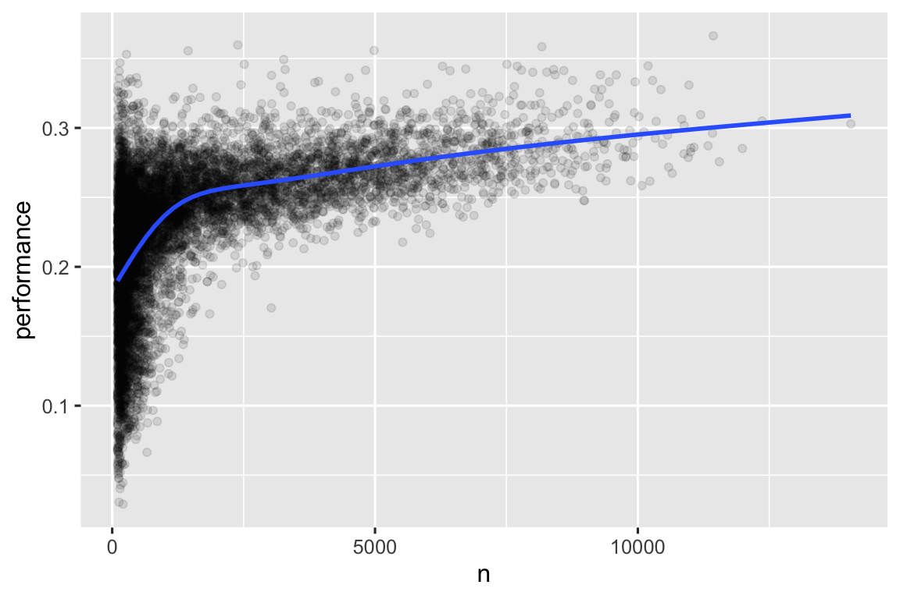

library(nycflights13)
library(tidyverse)
#> ── Attaching core tidyverse packages ───────────────────── tidyverse 2.0.0 ──
#> ✔ dplyr 1.1.4 ✔ readr 2.1.5
#> ✔ forcats 1.0.0 ✔ stringr 1.5.1
#> ✔ ggplot2 3.5.1 ✔ tibble 3.2.1
#> ✔ lubridate 1.9.3 ✔ tidyr 1.3.1
#> ✔ purrr 1.0.2
#> ── Conflicts ─────────────────────────────────────── tidyverse_conflicts() ──
#> ✖ dplyr::filter() masks stats::filter()
#> ✖ dplyr::lag() masks stats::lag()
#> ℹ Use the conflicted package (<http://conflicted.r-lib.org/>) to force all conflicts to become errors3 数据转换
3.1 引言
可视化是生成新见解的重要工具，但很少能刚好得到你所需的确切形式的数据来制作你想要的图。通 常，你需要创建一些新的变量或汇总统计量来用数据回答你的问题；或者你可能只是想重命名变量或重新排序观测值，以使数据更易于处理。在 本章中，你将学习如何做到这些（及更多）。本 章将介绍使用dplyr包和2013年从纽约市出发的航班数据集进行数据转换。
本章的目标是为你概述转换数据框的所有关键工具。我 们将从对数据框的行和列进行操作的函数开始，然后再次回到讨论管道（pipe），这是一个重要的工具，用于组合动词。接 下来，我们将介绍处理分组的能力。我 们将以一个研究案例结束本章，该案例研究展示了这些函数的实际应用；当我们开始深入研究特定类型的数据（例如数字、字符串、日期）时，我们将在后续的章节中更详细地讨论这些函数。
3.1.1 必要条件
本章将重点讨论dplyr包，它是tidyverse的另一个核心成员。我 们将使用来自nycflights13包的数据来说明dplyr包的关键理念，并使用ggplot2来帮助我们理解数据。
请注意加载tidyverse时显示的冲突消息。它 告诉你dplyr覆盖了R基础包中的一些函数。如 果你在加载dplyr后想使用这些函数的基础版本，你需要使用它们的全名：stats::filter() 和 stats::lag()。到 目前为止，我们主要忽略了函数来自哪个包，因为大多数情况下这并不重要。但 是，知道包名可以帮助你找到帮助和相关的函数，所以当我们需要精确地知道一个函数来自哪个包时，我们将使用与R相同的语法：packagename::functionname()。
3.1.2 nycflights13
为了探索基本的dplyr操作，我们将使用nycflights13::flights。此 数据集包含所有r format(nrow(nycflights13::flights), big.mark = “,”)2013年从纽约出发的航班。这 些数据来自美国Bureau of Transportation Statistics，并记录在 ?f lights。
flights
#> # A tibble: 336,776 × 19
#> year month day dep_time sched_dep_time dep_delay arr_time sched_arr_time
#> <int> <int> <int> <int> <int> <dbl> <int> <int>
#> 1 2013 1 1 517 515 2 830 819
#> 2 2013 1 1 533 529 4 850 830
#> 3 2013 1 1 542 540 2 923 850
#> 4 2013 1 1 544 545 -1 1004 1022
#> 5 2013 1 1 554 600 -6 812 837
#> 6 2013 1 1 554 558 -4 740 728
#> # ℹ 336,770 more rows
#> # ℹ 11 more variables: arr_delay <dbl>, carrier <chr>, flight <int>, …flights是一个tibble（tibble是tidyverse使用的一种特殊类型的数据框），用于避免一些常见的意外情况。t ibble和数据框之间最重要的区别在于它们的输出方式；tibble是为了大型数据集设计的，因此它们只显示前几行和能够在一个屏幕上显示的列。有 几种方法可以查看所有内容。如 果你正在使用RStudio，最方便的可能是View(flights)，这会打开一个可以滚动和筛选的交互式视图。另 外你可以使用print(flights, width = Inf)来显示所有列，或者使用glimpse()函数：
glimpse(flights)
#> Rows: 336,776
#> Columns: 19
#> $ year <int> 2013, 2013, 2013, 2013, 2013, 2013, 2013, 2013, 2013…
#> $ month <int> 1, 1, 1, 1, 1, 1, 1, 1, 1, 1, 1, 1, 1, 1, 1, 1, 1, 1…
#> $ day <int> 1, 1, 1, 1, 1, 1, 1, 1, 1, 1, 1, 1, 1, 1, 1, 1, 1, 1…
#> $ dep_time <int> 517, 533, 542, 544, 554, 554, 555, 557, 557, 558, 55…
#> $ sched_dep_time <int> 515, 529, 540, 545, 600, 558, 600, 600, 600, 600, 60…
#> $ dep_delay <dbl> 2, 4, 2, -1, -6, -4, -5, -3, -3, -2, -2, -2, -2, -2,…
#> $ arr_time <int> 830, 850, 923, 1004, 812, 740, 913, 709, 838, 753, 8…
#> $ sched_arr_time <int> 819, 830, 850, 1022, 837, 728, 854, 723, 846, 745, 8…
#> $ arr_delay <dbl> 11, 20, 33, -18, -25, 12, 19, -14, -8, 8, -2, -3, 7,…
#> $ carrier <chr> "UA", "UA", "AA", "B6", "DL", "UA", "B6", "EV", "B6"…
#> $ flight <int> 1545, 1714, 1141, 725, 461, 1696, 507, 5708, 79, 301…
#> $ tailnum <chr> "N14228", "N24211", "N619AA", "N804JB", "N668DN", "N…
#> $ origin <chr> "EWR", "LGA", "JFK", "JFK", "LGA", "EWR", "EWR", "LG…
#> $ dest <chr> "IAH", "IAH", "MIA", "BQN", "ATL", "ORD", "FLL", "IA…
#> $ air_time <dbl> 227, 227, 160, 183, 116, 150, 158, 53, 140, 138, 149…
#> $ distance <dbl> 1400, 1416, 1089, 1576, 762, 719, 1065, 229, 944, 73…
#> $ hour <dbl> 5, 5, 5, 5, 6, 5, 6, 6, 6, 6, 6, 6, 6, 6, 6, 5, 6, 6…
#> $ minute <dbl> 15, 29, 40, 45, 0, 58, 0, 0, 0, 0, 0, 0, 0, 0, 0, 59…
#> $ time_hour <dttm> 2013-01-01 05:00:00, 2013-01-01 05:00:00, 2013-01-0…在这两种视图中，变量名后面跟着缩写，这些缩写表示每个变量的类型：<int>是整数的缩写，<dbl>是双精度浮点数（也称为实数）的缩写，<chr>是字符（也称为字符串）的缩写，<dttm>是日期时间的缩写。这 些缩写很重要，因为你可以在一列上执行的操作在很大程度上取决于它的“类型”。
3.1.3 dplyr 基础
下面将学习dplyr的主要操作（即函数），这些函数能帮你解决绝大多数的数据处理问题。但 在讨论它们各自的差异之前，值得一提的是它们的共同点：
- 第一个参数始终是一个数据框；
- 后续参数通常使用变量名（不带引号）来描述要操作的列；
- 输出始终是一个新的数据框。
因为每个函数都擅长做一件事，所以解决复杂问题通常需要组合多个函数，我们将使用管道操作符|>来实现这一点。我 们将在 小节 4.3 更详细地讨论管道操作符。简 言之，管道操作符将其左侧的内容传递给其右侧的函数，因此x |> f(y)等同于f(x, y)，而x |> f(y) |> g(z)等同于g(f(x, y), z)，|>最简单的发音是“then”。这 使得即使你还没有学习细节，也有可能理解下面的代码：
flights |>
filter(dest == "IAH") |>
group_by(year, month, day) |>
summarize(
arr_delay = mean(arr_delay, na.rm = TRUE)
)dplyr的函数根据作用对象不同分为四组：行（rows）、列（columns）、组（groups）或表（tables）。下 面将学习有关行、列和组的最重要函数，然后回到 章节 19 中探讨作用于表的合并操作。让 我们开始吧!
3.2 行
对数据集的行进行操作的最重要的函数是filter()，它影响行的去留而不改变它们的顺序；而函数arrange()改变行的顺序而不影响行的去留。这 两个函数都只影响行，列保持不变。我 们还将讨论distinct()，它找出具有唯一值的行，但与arrange()和filter()不同，它还可以选择性地修改列。
3.2.1 filter()
Filter()允许你根据列的值保留行1。 第一个参数是数据框，第二个及随后的参数是保留该行必须为真的条件。 例如，我们可以找出所有迟到超过120分钟(2小时)的航班:
flights |>
filter(dep_delay > 120)
#> # A tibble: 9,723 × 19
#> year month day dep_time sched_dep_time dep_delay arr_time sched_arr_time
#> <int> <int> <int> <int> <int> <dbl> <int> <int>
#> 1 2013 1 1 848 1835 853 1001 1950
#> 2 2013 1 1 957 733 144 1056 853
#> 3 2013 1 1 1114 900 134 1447 1222
#> 4 2013 1 1 1540 1338 122 2020 1825
#> 5 2013 1 1 1815 1325 290 2120 1542
#> 6 2013 1 1 1842 1422 260 1958 1535
#> # ℹ 9,717 more rows
#> # ℹ 11 more variables: arr_delay <dbl>, carrier <chr>, flight <int>, …除了使用 >（大于）之外，还可以使用 >=（大于或等于）、<（小于）、<=（小于或等于）、==（等于）和 != （不等于）。你 还可以使用 & 或 , 来组合条件，表示“和”（检查两个条件是否都满足），或者使用 | 来表示“或”（检查任一条件是否满足）：
# Flights that departed on January 1
flights |>
filter(month == 1 & day == 1)
#> # A tibble: 842 × 19
#> year month day dep_time sched_dep_time dep_delay arr_time sched_arr_time
#> <int> <int> <int> <int> <int> <dbl> <int> <int>
#> 1 2013 1 1 517 515 2 830 819
#> 2 2013 1 1 533 529 4 850 830
#> 3 2013 1 1 542 540 2 923 850
#> 4 2013 1 1 544 545 -1 1004 1022
#> 5 2013 1 1 554 600 -6 812 837
#> 6 2013 1 1 554 558 -4 740 728
#> # ℹ 836 more rows
#> # ℹ 11 more variables: arr_delay <dbl>, carrier <chr>, flight <int>, …
# Flights that departed in January or February
flights |>
filter(month == 1 | month == 2)
#> # A tibble: 51,955 × 19
#> year month day dep_time sched_dep_time dep_delay arr_time sched_arr_time
#> <int> <int> <int> <int> <int> <dbl> <int> <int>
#> 1 2013 1 1 517 515 2 830 819
#> 2 2013 1 1 533 529 4 850 830
#> 3 2013 1 1 542 540 2 923 850
#> 4 2013 1 1 544 545 -1 1004 1022
#> 5 2013 1 1 554 600 -6 812 837
#> 6 2013 1 1 554 558 -4 740 728
#> # ℹ 51,949 more rows
#> # ℹ 11 more variables: arr_delay <dbl>, carrier <chr>, flight <int>, …当您结合使用 | 和 == 时有一个很有用的快捷方式：%in%。它 会保留变量等于右侧值之一的行：
# A shorter way to select flights that departed in January or February
flights |>
filter(month %in% c(1, 2))
#> # A tibble: 51,955 × 19
#> year month day dep_time sched_dep_time dep_delay arr_time sched_arr_time
#> <int> <int> <int> <int> <int> <dbl> <int> <int>
#> 1 2013 1 1 517 515 2 830 819
#> 2 2013 1 1 533 529 4 850 830
#> 3 2013 1 1 542 540 2 923 850
#> 4 2013 1 1 544 545 -1 1004 1022
#> 5 2013 1 1 554 600 -6 812 837
#> 6 2013 1 1 554 558 -4 740 728
#> # ℹ 51,949 more rows
#> # ℹ 11 more variables: arr_delay <dbl>, carrier <chr>, flight <int>, …我们将在 章节 12 中详细讨论这些比较和逻辑运算符。
当你运行filter()时，dplyr会执行筛选操作，创建一个新的数据框，然后输出它。它 不会修改现有的flights数据集，因为dplyr函数永远不会修改它们的输入。要 保存结果，你需要使用赋值运算符<-：
jan1 <- flights |>
filter(month == 1 & day == 1)3.2.2 常见错误
从你刚开始学习R时，最容易犯的错误是在检验是否相等时使用=而不是==。f ilter()会告诉你发生了什么：
flights |>
filter(month = 1)
#> Error in `filter()`:
#> ! We detected a named input.
#> ℹ This usually means that you've used `=` instead of `==`.
#> ℹ Did you mean `month == 1`?另一个错误是像在英语中那样写“或”语句:
flights |>
filter(month == 1 | 2)这段代码“有效”，它不会抛出错误，但它没有按照你的期望去做，因为 | 首先检查条件month == 1，然后检查条件2，而检查2并不是一个合理的条件。我 们将在 小节 15.6.2 更多地了解这里发生了什么，以及为什么。
3.2.3 arrange()
arrange()根据列的值改变行的顺序。它 根据一个数据框和一组列名（或更复杂的表达式）来排序。如 果你提供了多个列名，那么每个额外的列都将用于解决前面列中值的并列问题。例 如，下面的代码按出发时间排序，出发时间分布在四个列中。我 们首先得到最早的年份，然后在同一年份中，我们得到最早的月份，依此类推。
flights |>
arrange(year, month, day, dep_time)
#> # A tibble: 336,776 × 19
#> year month day dep_time sched_dep_time dep_delay arr_time sched_arr_time
#> <int> <int> <int> <int> <int> <dbl> <int> <int>
#> 1 2013 1 1 517 515 2 830 819
#> 2 2013 1 1 533 529 4 850 830
#> 3 2013 1 1 542 540 2 923 850
#> 4 2013 1 1 544 545 -1 1004 1022
#> 5 2013 1 1 554 600 -6 812 837
#> 6 2013 1 1 554 558 -4 740 728
#> # ℹ 336,770 more rows
#> # ℹ 11 more variables: arr_delay <dbl>, carrier <chr>, flight <int>, …你可以在arrange()内部对某一列使用desc()来根据该列的值以降序（从大到小）重新排序数据框。例 如，这段代码将航班按延误时间从长到短排序：
flights |>
arrange(desc(dep_delay))
#> # A tibble: 336,776 × 19
#> year month day dep_time sched_dep_time dep_delay arr_time sched_arr_time
#> <int> <int> <int> <int> <int> <dbl> <int> <int>
#> 1 2013 1 9 641 900 1301 1242 1530
#> 2 2013 6 15 1432 1935 1137 1607 2120
#> 3 2013 1 10 1121 1635 1126 1239 1810
#> 4 2013 9 20 1139 1845 1014 1457 2210
#> 5 2013 7 22 845 1600 1005 1044 1815
#> 6 2013 4 10 1100 1900 960 1342 2211
#> # ℹ 336,770 more rows
#> # ℹ 11 more variables: arr_delay <dbl>, carrier <chr>, flight <int>, …注意，行数没有改变，我们只是对数据进行了排列，没有对其进行过筛选。
3.2.4 distinct()
distinct()在数据集中找出所有唯一的行，所以从技术上讲，它主要对行进行操作。然 而，在大多数情况下，你会想要某些变量的不同组合，因此你也可以选择性地提供列名：
# Remove duplicate rows, if any
flights |>
distinct()
#> # A tibble: 336,776 × 19
#> year month day dep_time sched_dep_time dep_delay arr_time sched_arr_time
#> <int> <int> <int> <int> <int> <dbl> <int> <int>
#> 1 2013 1 1 517 515 2 830 819
#> 2 2013 1 1 533 529 4 850 830
#> 3 2013 1 1 542 540 2 923 850
#> 4 2013 1 1 544 545 -1 1004 1022
#> 5 2013 1 1 554 600 -6 812 837
#> 6 2013 1 1 554 558 -4 740 728
#> # ℹ 336,770 more rows
#> # ℹ 11 more variables: arr_delay <dbl>, carrier <chr>, flight <int>, …
# Find all unique origin and destination pairs
flights |>
distinct(origin, dest)
#> # A tibble: 224 × 2
#> origin dest
#> <chr> <chr>
#> 1 EWR IAH
#> 2 LGA IAH
#> 3 JFK MIA
#> 4 JFK BQN
#> 5 LGA ATL
#> 6 EWR ORD
#> # ℹ 218 more rows或者，如果希望在筛选唯一行时保留其他列，您可以使用.keep_all = TRUE选项。
flights |>
distinct(origin, dest, .keep_all = TRUE)
#> # A tibble: 224 × 19
#> year month day dep_time sched_dep_time dep_delay arr_time sched_arr_time
#> <int> <int> <int> <int> <int> <dbl> <int> <int>
#> 1 2013 1 1 517 515 2 830 819
#> 2 2013 1 1 533 529 4 850 830
#> 3 2013 1 1 542 540 2 923 850
#> 4 2013 1 1 544 545 -1 1004 1022
#> 5 2013 1 1 554 600 -6 812 837
#> 6 2013 1 1 554 558 -4 740 728
#> # ℹ 218 more rows
#> # ℹ 11 more variables: arr_delay <dbl>, carrier <chr>, flight <int>, …所有这些不同的航班都在1月1日并不是巧合：distinct()会在数据集中找到第一个出现的唯一行，并丢弃其余的行。
如果你想要找到出现的次数，那么最好将distinct()替换为count()，并使用sort = TRUE参数，你可以按照出现次数的降序排列它们。你 将在 小节 13.3 学到更多关于count的内容。
flights |>
count(origin, dest, sort = TRUE)
#> # A tibble: 224 × 3
#> origin dest n
#> <chr> <chr> <int>
#> 1 JFK LAX 11262
#> 2 LGA ATL 10263
#> 3 LGA ORD 8857
#> 4 JFK SFO 8204
#> 5 LGA CLT 6168
#> 6 EWR ORD 6100
#> # ℹ 218 more rows3.2.5 练习
- 针对每个条件，在单个管道中查找所有符合以下条件的航班：
- 到达延误两小时或更长时间
- 飞往休斯敦（IAH或HOU）
- 由联合航空（United）、美国航空（American）,或达美航空（Delta）运营
- 在夏季（七月、八月和九月）起飞
- 到达延误超过两小时，但起飞不延误
- 延误至少一小时，但在飞行中弥补了超过30分钟的时间
- 对flights 进行排序以找到出发延误时间最长的航班；找到早上最早起飞的航班；
- 对flights进行排序以找到最快的航班。（ 提示: 尝试在函数中包含数学计算。）
- 2013年的每一天都有航班吗？
- 哪些航班飞行了最远的距离？哪 些飞行了最短的距离？
- 如果你同时使用filter()和arrange()，你使用的顺序重要吗？为 什么？思 考一下结果以及这些函数需要执行多少工作。
3.3 列
有四个重要的函数，它们影响列而不改变行：mutate()用于根据现有列创建新列，select()用于更改列存留，rename()用于更改列的名称，而relocate()用于更改列的位置。
3.3.1 mutate()
mutate()的作用是添加根据现有列计算得到的新列。在 数据转换章节中，你将学习一系列函数，这些函数可用于处理不同类型的变量。目 前，我们将继续使用基础代数，这允许我们计算gain（即延误航班在空中弥补了多少时间）以及每小时的速度：
flights |>
mutate(
gain = dep_delay - arr_delay,
speed = distance / air_time * 60
)
#> # A tibble: 336,776 × 21
#> year month day dep_time sched_dep_time dep_delay arr_time sched_arr_time
#> <int> <int> <int> <int> <int> <dbl> <int> <int>
#> 1 2013 1 1 517 515 2 830 819
#> 2 2013 1 1 533 529 4 850 830
#> 3 2013 1 1 542 540 2 923 850
#> 4 2013 1 1 544 545 -1 1004 1022
#> 5 2013 1 1 554 600 -6 812 837
#> 6 2013 1 1 554 558 -4 740 728
#> # ℹ 336,770 more rows
#> # ℹ 13 more variables: arr_delay <dbl>, carrier <chr>, flight <int>, …默认情况下，mutate()会在数据集的右侧添加新列，但这使得我们很难看到数据集里发生了什么。可 以使用.before参数来将变量添加到左侧2：
flights |>
mutate(
gain = dep_delay - arr_delay,
speed = distance / air_time * 60,
.before = 1
)
#> # A tibble: 336,776 × 21
#> gain speed year month day dep_time sched_dep_time dep_delay arr_time
#> <dbl> <dbl> <int> <int> <int> <int> <int> <dbl> <int>
#> 1 -9 370. 2013 1 1 517 515 2 830
#> 2 -16 374. 2013 1 1 533 529 4 850
#> 3 -31 408. 2013 1 1 542 540 2 923
#> 4 17 517. 2013 1 1 544 545 -1 1004
#> 5 19 394. 2013 1 1 554 600 -6 812
#> 6 -16 288. 2013 1 1 554 558 -4 740
#> # ℹ 336,770 more rows
#> # ℹ 12 more variables: sched_arr_time <int>, arr_delay <dbl>, ….是一个标志，表示.before 是函数的参数，而不是我们正在创建的第三个新变量的名称。你 也可以使用.after在某个变量之后添加新变量，在.before和.after中，你都可以使用变量名而不是位置。例 如，我们可以在day之后添加新变量：
flights |>
mutate(
gain = dep_delay - arr_delay,
speed = distance / air_time * 60,
.after = day
)另外，你可以使用.keep参数来控制保留哪些变量。一 个特别有用的参数是”used”，它指定我们只保留在mutate()步骤中涉及或创建的列。例 如，以下输出将仅包含dep_delay、arr_delay、air_time、gain、hours和gain_per_hour这些变量。
flights |>
mutate(
gain = dep_delay - arr_delay,
hours = air_time / 60,
gain_per_hour = gain / hours,
.keep = "used"
)请注意，由于我们没有将上述计算的结果重新分配给flights数据框，新的变量gain、hours和gain_per_hour只会被输出出来，但不会被存储在一个数据框中。如 果我们希望这些变量在未来的数据框中可用，我们应该仔细考虑是否要将结果重新分配给flights，从而用更多的变量覆盖原始数据框，还是分配给一个新的对象。通 常，正确的答案是创建一个新的对象，并为其命名以清晰地指示其内容，例如delay_gain，但你也可能有充分的理由覆盖flights。
3.3.2 select()
获得包含数百甚至数千个变量的数据集并不罕见。在 这种情况下，第一个挑战通常是仅关注你感兴趣的变量。s elect()允许你基于变量的名称，通过操作快速缩小到一个有用的子集：
按名称选择列:
flights |> select(year, month, day)选择year和day之间的所有列:
flights |> select(year:day)选择除了从year到day的所有列：
flights |> select(!year:day)历史上，这个操作是用-而不是!来 完成的，所以你可能会在实际场景中看-。这 两个操作符具有相同的目的，但在行为上有细微的差别。我 们推荐使用!， 因为它读作“不是”，并且与&和|配合得很好。
选择所有是字符的列：
flights |> select(where(is.character))
在select()中，你可以使用一些辅助函数：
- starts_with(“abc”): 匹配以 “abc” 开头的名称；
- ends_with(“xyz”): 匹配以 “xyz” 结尾的名称；
- contains(“ijk”): 匹配包含 “ijk” 的名称；
- num_range(“x”, 1:3): 匹配 x1、x2 和 x3。
参阅?s elect以获取更多详细信息。一 旦你熟悉了正则表达式（这是 章节 15 的内容），你也可以使用matches()来选择匹配某个模式的变量。
你可以在select()变量时使用=来重命名它们，新名称出现在=的左侧，旧变量出现在右侧：
flights |>
select(tail_num = tailnum)
#> # A tibble: 336,776 × 1
#> tail_num
#> <chr>
#> 1 N14228
#> 2 N24211
#> 3 N619AA
#> 4 N804JB
#> 5 N668DN
#> 6 N39463
#> # ℹ 336,770 more rows3.3.3 rename()
如果你想保留所有现有的变量，只是对几个重命名，可以使用rename()而不是select():
flights |>
rename(tail_num = tailnum)
#> # A tibble: 336,776 × 19
#> year month day dep_time sched_dep_time dep_delay arr_time sched_arr_time
#> <int> <int> <int> <int> <int> <dbl> <int> <int>
#> 1 2013 1 1 517 515 2 830 819
#> 2 2013 1 1 533 529 4 850 830
#> 3 2013 1 1 542 540 2 923 850
#> 4 2013 1 1 544 545 -1 1004 1022
#> 5 2013 1 1 554 600 -6 812 837
#> 6 2013 1 1 554 558 -4 740 728
#> # ℹ 336,770 more rows
#> # ℹ 11 more variables: arr_delay <dbl>, carrier <chr>, flight <int>, …如果您有一堆命名不一致的列，并且手工修复它们会很痛苦，请查看janitor::clean_names()，它提供了一些有用的自动清理方法。
3.3.4 relocate()
使用relocate()来移动变量。你 可能希望将相关变量收集在一起或将重要变量移到前面。默 认情况下，relocate()将变量移到前面:
flights |>
relocate(time_hour, air_time)
#> # A tibble: 336,776 × 19
#> time_hour air_time year month day dep_time sched_dep_time
#> <dttm> <dbl> <int> <int> <int> <int> <int>
#> 1 2013-01-01 05:00:00 227 2013 1 1 517 515
#> 2 2013-01-01 05:00:00 227 2013 1 1 533 529
#> 3 2013-01-01 05:00:00 160 2013 1 1 542 540
#> 4 2013-01-01 05:00:00 183 2013 1 1 544 545
#> 5 2013-01-01 06:00:00 116 2013 1 1 554 600
#> 6 2013-01-01 05:00:00 150 2013 1 1 554 558
#> # ℹ 336,770 more rows
#> # ℹ 12 more variables: dep_delay <dbl>, arr_time <int>, …你也可以使用.before和.after参数指定放置它们的位置，就像mutate()一样:
flights |>
relocate(year:dep_time, .after = time_hour)
flights |>
relocate(starts_with("arr"), .before = dep_time)3.3.5 练习
比较dep_time、sched_dep_time和dep_delay，你认为这三个数字是如何联系起来的？
头脑风暴，想尽可能多的从flights中选择变量dep_time、dep_delay、arr_time和arr_delay的方法。
如果在select()调用中多次指定相同变量的名称，会出现什么情况？
any_of()函数的作用是什么？为 什么它和下面这个向量结合会有用?
variables <- c("year", "month", "day", "dep_delay", "arr_delay")运行以下代码的结果是否让你感到惊讶？默 认情况下，select()的辅助函数如何处理大写和小写？如 何更改该默认值？
flights |> select(contains("TIME"))将air_time重命名为air_time_min，以表明度量单位，并将其移动到数据框的开头。
为什么下面的代码不运行，error 代表什么意思?
flights |> select(tailnum) |> arrange(arr_delay) #> Error in `arrange()`: #> ℹ In argument: `..1 = arr_delay`. #> Caused by error: #> ! object 'arr_delay' not found
3.4 管道
上面已经展示了管道的简单示例，但是当你开始组合使用多个函数时，它的真正功能才会出现。例 如，假设你想查找飞往休斯顿IAH机场的最快航班，您需要组合函数filter()、mutate()、select()和arrange():
flights |>
filter(dest == "IAH") |>
mutate(speed = distance / air_time * 60) |>
select(year:day, dep_time, carrier, flight, speed) |>
arrange(desc(speed))
#> # A tibble: 7,198 × 7
#> year month day dep_time carrier flight speed
#> <int> <int> <int> <int> <chr> <int> <dbl>
#> 1 2013 7 9 707 UA 226 522.
#> 2 2013 8 27 1850 UA 1128 521.
#> 3 2013 8 28 902 UA 1711 519.
#> 4 2013 8 28 2122 UA 1022 519.
#> 5 2013 6 11 1628 UA 1178 515.
#> 6 2013 8 27 1017 UA 333 515.
#> # ℹ 7,192 more rows即使这个管道有四个步骤，也很容易浏览，因为每个步骤的函数都位于每行的开头：从flights数据开始，然后过滤，转换，选择，最后排序。
如果我们不使用管道会发生什么？我 们可以将每个函数调用嵌套在前一个调用内部：
arrange(
select(
mutate(
filter(
flights,
dest == "IAH"
),
speed = distance / air_time * 60
),
year:day, dep_time, carrier, flight, speed
),
desc(speed)
)或者可以使用一些中间对象：
flights1 <- filter(flights, dest == "IAH")
flights2 <- mutate(flights1, speed = distance / air_time * 60)
flights3 <- select(flights2, year:day, dep_time, carrier, flight, speed)
arrange(flights3, desc(speed))虽然这两种形式都有其适用的时间和场合，但管道通常会产生更易于编写和阅读的数据分析代码。
要在代码中添加管道，我们建议使用内置的键盘快捷键 Ctrl/Cmd + Shift + M。要 使用|>而不是%>%，你需要对 RStudio 选项进行一项更改，如 图 3.1 所示；稍后会详细介绍%>%。

|>, make sure the “Use native pipe operator” option is checked.
Magrittr
如果您已经使用了一段时间的tidyverse，那么你可能对magrittr包提供的%>%管道很熟悉。m agrittr包包含在tidyverse中，所以你可以在加载tidyverse时使用%>%：
library(tidyverse)
mtcars %>%
group_by(cyl) %>%
summarize(n = n())对于简单的情况，|>和%>%的行为是相同的。那 么我们为什么推荐基础管道|>呢？首 先，因为它是 R 语言的基础部分，所以你总是可以使用它，即使你没有使用 tidyverse。其 次，|>比%>%简单得多：在%>%于 2014 年被发明和|>于 2021 年在 R 4.1.0 中被引入之间的这段时间里，我们对管道有了更好的理解。这 使得|>能够舍弃那些不常用且不太重要的特性。
3.5 分组
到目前为止，你已经学习了处理行和列的函数。当 你添加了处理分组的能力时，dplyr会变得更加强大。在 本节中，我们将重点关注最重要的函数：group_by()、summarize()和slice函数族。
3.5.1 group_by()
使用group_by()将数据集划分为对分析有意义的组:
flights |>
group_by(month)
#> # A tibble: 336,776 × 19
#> # Groups: month [12]
#> year month day dep_time sched_dep_time dep_delay arr_time sched_arr_time
#> <int> <int> <int> <int> <int> <dbl> <int> <int>
#> 1 2013 1 1 517 515 2 830 819
#> 2 2013 1 1 533 529 4 850 830
#> 3 2013 1 1 542 540 2 923 850
#> 4 2013 1 1 544 545 -1 1004 1022
#> 5 2013 1 1 554 600 -6 812 837
#> 6 2013 1 1 554 558 -4 740 728
#> # ℹ 336,770 more rows
#> # ℹ 11 more variables: arr_delay <dbl>, carrier <chr>, flight <int>, …group_by()并不改变数据，但如果你仔细观察输出，你会注意到输出显示它是按月“分组”（Groups: month [12]）。这 意味着后续的操作将“按月”进行。g roup_by()将这个分组特性（称为类）添加到数据框中，从而改变了后续应用于数据的函数的行为。
3.5.2 summarize()
最重要的分组操作是汇总，如果用于计算单个汇总统计量，它将数据框缩减为每个组只有一行。在 dplyr 中，这个操作是通过summarize()3完成的，如下例所示，它计算了每个月的平均离港延误时间：
flights |>
group_by(month) |>
summarize(
avg_delay = mean(dep_delay)
)
#> # A tibble: 12 × 2
#> month avg_delay
#> <int> <dbl>
#> 1 1 NA
#> 2 2 NA
#> 3 3 NA
#> 4 4 NA
#> 5 5 NA
#> 6 6 NA
#> # ℹ 6 more rows哎呀！出 错了，我们所有的结果都是 NA（读作“N-A”），这是 R 中缺失值的符号。这 是因为我们观察的一些航班在延误列中有缺失数据，所以当我们将这些值包括在内计算平均值时，我们就得到了一个 NA 结果。我 们将在 章节 18 部分中详细讨论缺失值，但现在我们会告诉mean()函数通过设置na.rm参数为TRUE来忽略所有缺失值：
flights |>
group_by(month) |>
summarize(
avg_delay = mean(dep_delay, na.rm = TRUE)
)
#> # A tibble: 12 × 2
#> month avg_delay
#> <int> <dbl>
#> 1 1 10.0
#> 2 2 10.8
#> 3 3 13.2
#> 4 4 13.9
#> 5 5 13.0
#> 6 6 20.8
#> # ℹ 6 more rows你可以在单次调用summarize()时创建任意数量的汇总。在 接下来的章节中，你将学习各种有用的汇总，但其中一个非常有用的摘要是n()，它返回每个组的行数
flights |>
group_by(month) |>
summarize(
avg_delay = mean(dep_delay, na.rm = TRUE),
n = n()
)
#> # A tibble: 12 × 3
#> month avg_delay n
#> <int> <dbl> <int>
#> 1 1 10.0 27004
#> 2 2 10.8 24951
#> 3 3 13.2 28834
#> 4 4 13.9 28330
#> 5 5 13.0 28796
#> 6 6 20.8 28243
#> # ℹ 6 more rowsMeans和counts在数据科学中可以让你走得很远，远到让你吃惊!
3.5.3 slice_ 函数族
有五个函数允许你方便地提取每个组中内特定行:
- df |> slice_head(n = 1) t从每个组中取第一行；
- df |> slice_tail(n = 1) 从每个组中取最后一行；
- df |> slice_min(x, n = 1) 取列x值最小的行；
- df |> slice_max(x, n = 1) 取列x值最大的行；
- df |> slice_sample(n = 1) 随机取一行。
你可以改变参数n来选择多行，或者代替n=，你可以使用prop = 0.1（例如）来选择每个组的 10% 的行。例 如，以下代码查找每个目的地到达时延误最严重的航班：
flights |>
group_by(dest) |>
slice_max(arr_delay, n = 1) |>
relocate(dest)
#> # A tibble: 108 × 19
#> # Groups: dest [105]
#> dest year month day dep_time sched_dep_time dep_delay arr_time
#> <chr> <int> <int> <int> <int> <int> <dbl> <int>
#> 1 ABQ 2013 7 22 2145 2007 98 132
#> 2 ACK 2013 7 23 1139 800 219 1250
#> 3 ALB 2013 1 25 123 2000 323 229
#> 4 ANC 2013 8 17 1740 1625 75 2042
#> 5 ATL 2013 7 22 2257 759 898 121
#> 6 AUS 2013 7 10 2056 1505 351 2347
#> # ℹ 102 more rows
#> # ℹ 11 more variables: sched_arr_time <int>, arr_delay <dbl>, …请注意，虽然有 105 个目的地，但我们这里得到了 108 行，这是怎么回事？s lice_min()和slice_max()会保留并列的值，所以n = 1意味着给我们所有具有最高值的行。如 果你想要每个组正好一行，你可以设置with_ties = FALSE。
这与使用summarize()计算最大延误类似，但你会得到整个对应的行（如果有并列值，则是多行），而不是单个汇总统计量。
3.5.4 按多变量分组
可以使用多个变量创建分组。例 如，我们可以为每个日期创建一个组。
daily <- flights |>
group_by(year, month, day)
daily
#> # A tibble: 336,776 × 19
#> # Groups: year, month, day [365]
#> year month day dep_time sched_dep_time dep_delay arr_time sched_arr_time
#> <int> <int> <int> <int> <int> <dbl> <int> <int>
#> 1 2013 1 1 517 515 2 830 819
#> 2 2013 1 1 533 529 4 850 830
#> 3 2013 1 1 542 540 2 923 850
#> 4 2013 1 1 544 545 -1 1004 1022
#> 5 2013 1 1 554 600 -6 812 837
#> 6 2013 1 1 554 558 -4 740 728
#> # ℹ 336,770 more rows
#> # ℹ 11 more variables: arr_delay <dbl>, carrier <chr>, flight <int>, …当你在使用多个变量对 tibble 进行分组并对其进行汇总时，每个汇总都会去掉最后一个分组。事 后看来，这不是让这个函数工作的好方法，但如果不破坏现有代码就很难改变它。为 了让发生的事情变得显而易见，dplyr 显示了一条消息，告诉你如何改变这种行为：
daily_flights <- daily |>
summarize(n = n())
#> `summarise()` has grouped output by 'year', 'month'. You can override using
#> the `.groups` argument.如果你对这种行为感到满意，你可以明确地要求它以抑制这条消息:
daily_flights <- daily |>
summarize(
n = n(),
.groups = "drop_last"
)或者，通过设置不同的值来改变默认行为，例如，“drop” 删除所有分组，或者 “keep” 保留相同的分组。
3.5.5 去消分组
您可能还希望在不使用summarize()的情况下从数据框中删除分组。您 可以使用ungroup()实现这一点。
daily |>
ungroup()
#> # A tibble: 336,776 × 19
#> year month day dep_time sched_dep_time dep_delay arr_time sched_arr_time
#> <int> <int> <int> <int> <int> <dbl> <int> <int>
#> 1 2013 1 1 517 515 2 830 819
#> 2 2013 1 1 533 529 4 850 830
#> 3 2013 1 1 542 540 2 923 850
#> 4 2013 1 1 544 545 -1 1004 1022
#> 5 2013 1 1 554 600 -6 812 837
#> 6 2013 1 1 554 558 -4 740 728
#> # ℹ 336,770 more rows
#> # ℹ 11 more variables: arr_delay <dbl>, carrier <chr>, flight <int>, …现在让我们看看在汇总未分组的数据框时会发生什么。
daily |>
ungroup() |>
summarize(
avg_delay = mean(dep_delay, na.rm = TRUE),
flights = n()
)
#> # A tibble: 1 × 2
#> avg_delay flights
#> <dbl> <int>
#> 1 12.6 336776返回一行，因为dplyr将未分组数据框中的所有行视为属于一个组。
3.5.6 .by
dplyr 1.1.0 引入了一个新的处于试验阶段的语法，用于每次操作的分组，即.by参数。g roup_by()和ungroup()不会被弃用，但现在你也可以在单个操作中使用.by参数进行分组：
flights |>
summarize(
delay = mean(dep_delay, na.rm = TRUE),
n = n(),
.by = month
)或者如果你想按多个变量分组：
flights |>
summarize(
delay = mean(dep_delay, na.rm = TRUE),
n = n(),
.by = c(origin, dest)
).by与所有动词（函数）兼容，其优势在于你不需要使用.groups参数来抑制分组消息，或在完成后使用ungroup()。
我们在编写本书时，没有重点关注这种语法，因为它当时非常新。但 我们还是想提一下，因为我们认为它很有前景，并且可能会非常受欢迎。你 可以在 dplyr 1.1.0 的博客中了解更多关于它的信息。
3.5.7 练习
哪家航空公司的平均延误时间最长？挑 战：你能理清机场差和航空公司差的影响吗？为 什么能/为什么不能？（ 提示: 考虑使用 flights |> group_by(carrier, dest) |> summarize(n())）
找出从每个目的地出发延误最严重的航班；
延误情况在一天中是如何变化的？用 图表来展示你的答案；
如果你给slice_min()及其相关函数提供负的n值会怎样？
用你刚刚学习的 dplyr 动词（函数）来解释count()做了什么。c ount()的sort参数有什么作用？
假设我们有以下的小数据框:
df <- tibble( x = 1:5, y = c("a", "b", "a", "a", "b"), z = c("K", "K", "L", "L", "K") )写下你认为的输出是什么样子，然后检查是否正确，并描述group_by()的作用。
df |> group_by(y)写下你认为的输出是什么样子，然后检查你是否正确，并描述arrange()的作用。同 时评论一下它与（a）部分中的group_by()有什么不同。
df |> arrange(y)写下你认为的输出是什么样子，然后检查你是否正确，并描述管道的功能。
df |> group_by(y) |> summarize(mean_x = mean(x))写下你认为的输出是什么样子，然后检查你是否正确，并描述管道的功能。然 后对信息内容进行评论。
df |> group_by(y, z) |> summarize(mean_x = mean(x))写下你认为的输出是什么样子，然后检查你是否正确，并描述管道的功能。与 (d)部分中的输出有何不同?
df |> group_by(y, z) |> summarize(mean_x = mean(x), .groups = "drop")写下你认为的输出是什么样子，然后检查你是否正确，并描述每个管道的作用。两 个管道的输出有什么不同?
df |> group_by(y, z) |> summarize(mean_x = mean(x)) df |> group_by(y, z) |> mutate(mean_x = mean(x))
3.6 案例研究: 汇总数据和样本量
无论何时进行数据汇总，包含计数（n()）总是一个好主意。这 样可以确保你不是基于很少量的数据来得出结论。我 们将使用Lahman包中的棒球数据来演示这一点。具 体来说，我们将比较球员击球成功（H）的次数与尝试击球（AB）的次数之间的比例：
batters <- Lahman::Batting |>
group_by(playerID) |>
summarize(
performance = sum(H, na.rm = TRUE) / sum(AB, na.rm = TRUE),
n = sum(AB, na.rm = TRUE)
)
batters
#> # A tibble: 20,469 × 3
#> playerID performance n
#> <chr> <dbl> <int>
#> 1 aardsda01 0 4
#> 2 aaronha01 0.305 12364
#> 3 aaronto01 0.229 944
#> 4 aasedo01 0 5
#> 5 abadan01 0.0952 21
#> 6 abadfe01 0.111 9
#> # ℹ 20,463 more rows当我们绘制击球手的技巧（通过击球率来衡量，即performance）与击球机会的数量（通过击球次数来衡量，即n）之间的关系时，你会看到两种模式：
- 击球次数较少的球员之间的技巧差异更大。这种图的形状非常典型：每当你绘制平均值（或其他汇总统计量）与组大小时，你会看到随着样本量的增加，变异程度会降低4。
- 技巧（performance）与击球机会（n）之间存在正相关关系，因为球队希望给他们的最佳击球手最多的击球机会。
batters |>
filter(n > 100) |>
ggplot(aes(x = n, y = performance)) +
geom_point(alpha = 1 / 10) +
geom_smooth(se = FALSE)
请注意将ggplot2和dplyr结合使用的便捷模式。你 只需要记住在数据集处理时使用|>，而在向你的图添加图层时使用+。
这对于排名也有重要的影响。如 果你只是简单地根据desc(performance)进行排序，那么显然击球率最好的人是那些尝试击球次数很少但碰巧击中的人，他们不一定是技术最熟练的球员：
batters |>
arrange(desc(performance))
#> # A tibble: 20,469 × 3
#> playerID performance n
#> <chr> <dbl> <int>
#> 1 abramge01 1 1
#> 2 alberan01 1 1
#> 3 banisje01 1 1
#> 4 bartocl01 1 1
#> 5 bassdo01 1 1
#> 6 birasst01 1 2
#> # ℹ 20,463 more rows关于这个问题及其解决方法，你可以在以下网址找到很好的解释： http://varianceexplained.org/r/empirical_bayes_baseball/ 和 https://www.evanmiller.org/how-not-to-sort-by-average-rating.html.
3.7 小结
在本章中，你学习了dplyr为处理数据框提供的工具。这 些工具大致分为三类：操作行的工具（如filter()和arrange()），操作列的工具（如select()和mutate()），以及操作组的工具（如group_by()和summarize()）。在 本章中，我们专注于这些“整个数据框”的工具，但你还没有深入了解可以使用单个变量做什么。我 们将在本书的转换部分回到这个问题，其中每一章都将为你提供特定类型变量的工具。
在下一章中，我们将回到工作流程，讨论代码风格的重要性，保持您的代码组织良好，以便你和他人能够轻松阅读和理解你的代码。